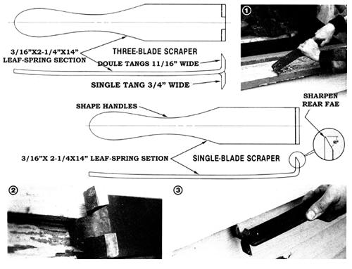

Really tough scraping chores just beg for "heavy artillery". Answer the call to arms with . . .
Our splendid 100-year-old house was badly in need of paint, but apparently had never been scraped down to its original varnish stain finish . . . making an already distasteful task a nearly impossible one! Worse yet, the small removable blades in the scrapers I bought for the job were rendered useless after ten minutes' work. Even by replacing them regularly, the best scraping pace I could muster was only two or three square feet per hour.
So rather than waste my time using ineffective tools, I decided to invest it by designing my own "paint pullers" to suit the circumstances. I knew that my homemade scrapers would have to be nail-tough to stand up to the abuse I was sure to put them through. At the same time, they'd have to be capable of taking repeated sharpenings (so that I could spruce them up between bouts).
The best-and least expensive-raw material I could think of was the carbon steel used in automobile leaf springs. Accordingly, I went on a short foray through the local scrap yard . . . which rewarded me with a 2-1/4" X 28" spring steel arc that looked just about perfect for the tools I had in mind.
Since I had to deal with both flat, exposed surfaces (such as trim and windowsills) and hard-to-get-at joint areas (the lower edges and upper faces of my lapstrake weatherboard), I needed to make two different kinds of scrapers. Using my gas torch, I first cut the salvaged leaf into two 2-1/4" X 14" pieces, then shaped handles in those sections by narrowing their sides and rounding. their butts, as shown in the diagram.
Once I'd accomplished this, I tackled the business end of each tool. I wanted the first "wall clearer" to be fairly conventional, so I just heated its square end about 1-1/4 inch from the tip and bent the metal to form a 1" lip that was about 90° to the inside of the leaf's natural arc. It was a simple matter to grind a 60° bevel into the face of this lip, and sharpen the rear face slightly to establish a fine cutting edge.
After I'd formed and sharpened the blade, I heated it to a cherry red color and quenched it in water to harden the steel. Then, to temper the material-i.e., remove its brittleness while still retaining its hardness-I reheated the tool in the kitchen oven at 300 to 400°F. When the new implement assumed a light to medium straw color, I took it from the cooker and let it cool in the air.
The second scraper was meant for getting at my house's nooks and crannies, so I made it a bit differently. First, I cut two parallel lengthwise slots-1/16" wide and 3/4 inch apart about 1-1/4 inches into the square end. Then I heated the metal at that point and bent the two outer tabs perpendicular to the inside of the spring's arc, and the center prong 180° opposite those. A bit of work with the grinder and whetstone brought the tips of these three "fingers" to the same sharpness as the blade on my first scraper, and I duplicated the heat treatment processes used before to harden and temper the second tool's steel.
Naturally, I rely on the single-blade scraper to clear flat surfaces. To get at the corners of the walls' overlapping boards, I use the second tool. The middle tooth clears off the upper part of each siding board, then I flip the "depainter" over and scrape the board's lower edges with either of the outside blades . . . depending on which hand I'm using.
Since the cutting edges are pretty hard, they must be sharpened by grinding or using a hand stone. (I have to combine a liberal use of water with a moderate use of the wheel when grinding, or I'll overheat-and take the temper out of-the metal.) But let me tell you, I've been more than pleased with the performance of my homemade blades. For one thing, they'll probably last a lifetime. And better than that, they've picked up my scraping pace to between 12 and 15 square feet per hour!. [1] The single-blade scraper makes short work of shoddy windowsills and other flat surfaces. [2] Thecompound-tang tool has a middle tooth for clearing sheathing boards' upper faces, and .... [3] two outer blades for gettingat the underneath edges.
|
 STAFF PHOTOS |
|
|